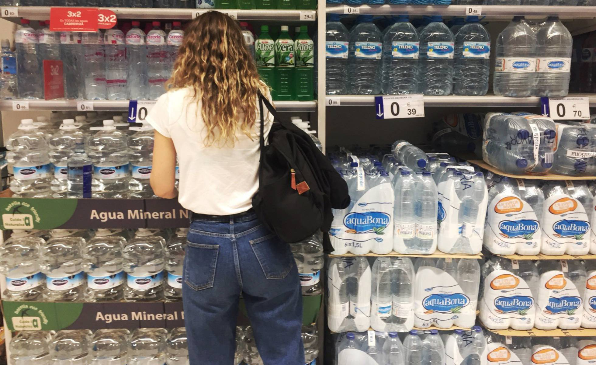

Trash city: Why Madrid needs to take a stand against plastic
British journalist Charles Graham-Dixon looks at the ingrained use of this so-called ‘wonder’ material in the Spanish capital, from the supermarket to the local ‘frutería
 Go to this newsCatalan premier announces snap election amid dispute over role as deputy
Catalan premier Quim Torra announced on Wednesday that there will be a snap election in the northeastern Spanish region once the regional budget is passed by parliament, a process that could take between two and three months.
Go to this news